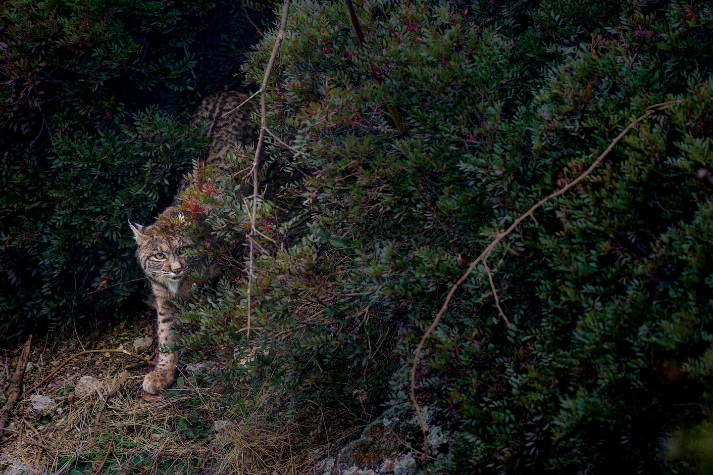
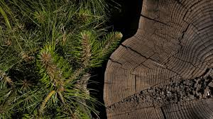

Science
New method delivers life-saving drugs to the brain-using sounds...
Read

History Magazine
The victorious origins of Cinco de Mayo
Read

Science
Fruits and vegetables are less nutritious than they used to be
Read
Today's Picks

Animals
Vaquita porpoises may still recover if illegal fishing ends

Magazine
Planet Possible
4 eco-friendly ways to keep pests out of your yard

Magazine
How this feline became the biggest comeback in cat conservation
History Magazine
This American's Supreme Court fight defined U.S. citizenship
Travel
World Heritage
Is Saudi Arabia ready for travelers?

Environment
Forests as 'carbon offsets'? Climate change has other plans.